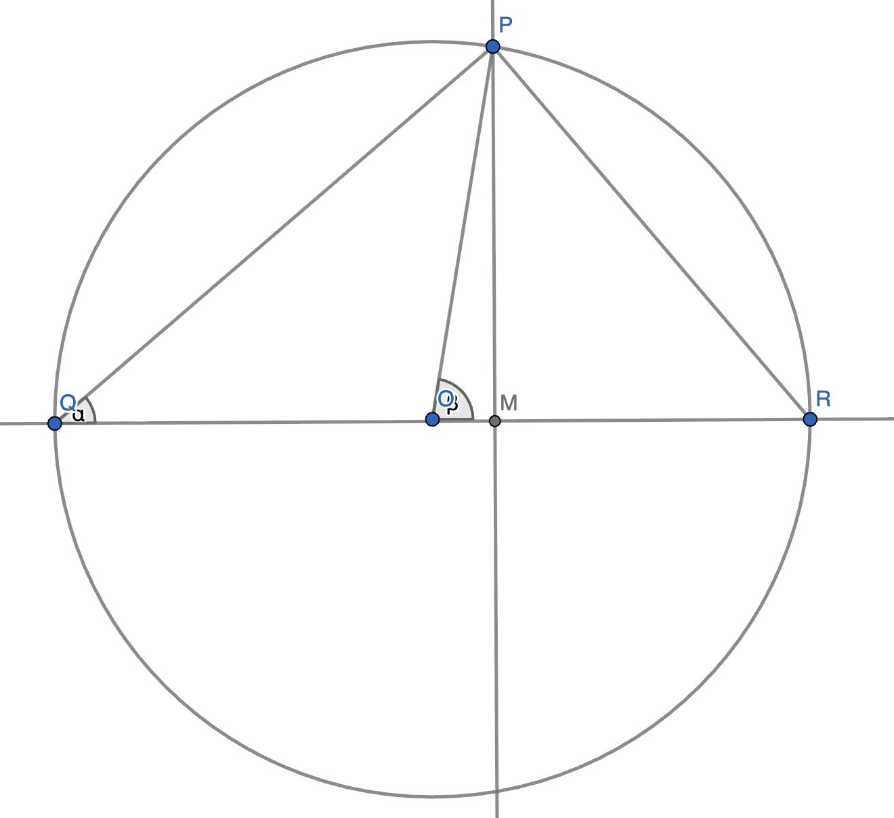

Tips for better problem solving
TL;DR
Some useful strategies to help you solve math problems better.
- Use the defining features of the setup
- Give things (meaningful) names
- Draw a picture (numbers, plots)
- Leverage symmetry
- Ask or solve a simpler version of the problem
- Try describing one object in two different ways
- Learn at least a little bit of programming
- Always gut-check your answer!
- Read a lot, and think about math problems a lot
Case study: Proving \(\cos^2(\theta) = \frac{1}{2}[1 + \cos(2\theta)]\) using the Inscribed Angle Theorem
We'll prove the identity \(\cos^2(\theta) = \frac{1}{2}[1 + \cos(2\theta)]\) using a geometric approach with the inscribed angle theorem.
Consider a circle with unit diameter. The circle has a center at \(O\). Let there be a diameter \(QR\) of length \(1\). Let \(P\) be a point on the circle not coinciding with \(Q\) or \(R\). Let \(PM\) be a line perpendicular to the diameter \(QR\). Thus, \(M\) lies on the diameter. Below is a figure showing the circle.

Let \(\alpha = \angle PQR\) (the inscribed angle) and \(\beta = \angle POR\) (the central angle). By the inscribed angle theorem, \(\beta = 2\alpha\).
Since \(QR\) is a diameter and \(P\) lies on the semicircle, \(\angle QPR = 90°\). This is a consequence of Thales' theorem (or the inscribed angle theorem): any angle inscribed in a semicircle (i.e., subtended by a diameter) is a right angle.
Since \(QR\) is of length \(1\) (unit diameter), and triangle \(QPR\) is right-angled at \(P\), we can use trigonometry. In triangle \(QPR\):
-
The hypotenuse is \(QR = 1\)
-
The angle at \(Q\) is \(\alpha\)
-
Therefore, \(PQ = \cos(\alpha)\)
Now, we need to find the length of \(QM\) in two different ways.
First way:
Consider triangle \(PMQ\), which is right-angled at \(M\) (since \(PM\) is perpendicular to \(QR\)). In this triangle:
-
The angle at \(Q\) is \(\alpha\)
-
The hypotenuse is \(PQ\)
-
The adjacent side to angle \(\alpha\) is \(QM\)
Therefore, \(\cos(\alpha) = \frac{QM}{PQ}\).
But we already know that \(PQ = \cos(\alpha)\) Substituting:
Solving for \(QM\):
Thus, the first way of finding \(QM\) gives us \(QM = \cos^2(\alpha)\).
Second way:
Since \(M\) lies on the diameter \(QR\) between \(Q\) and \(R\), we can express \(QM\) as:
where \(QO\) is the distance from \(Q\) to the center \(O\), and \(OM\) is the distance from the center \(O\) to point \(M\).
By the inscribed angle theorem, \(\beta = 2\alpha\), where \(\beta = \angle POR\) is the central angle and \(\alpha = \angle PQR\) is the inscribed angle.
Now consider triangle \(POM\), which is right-angled at \(M\) (since \(PM\) is perpendicular to \(QR\)). In this triangle:
-
The angle at \(O\) is \(\beta = 2\alpha\)
-
The hypotenuse is \(OP\)
-
The adjacent side to angle \(\beta\) is \(OM\)
Therefore, \(\cos(\beta) = \cos(2\alpha) = \frac{OM}{OP}\).
But \(OP = \frac{1}{2}\) (since it is the radius, and the diameter \(QR = 1\)).
Substituting:
Solving for \(OM\):
Now, to find \(QO\): Since \(Q\) is one endpoint of the diameter \(QR\) and \(O\) is the center of the circle, \(QO\) is the radius. Since the diameter \(QR = 1\), the radius is \(\frac{1}{2}\).
Therefore:
Now we can compute \(QM\) using the second way:
Thus, the second way of finding \(QM\) gives us \(QM = \frac{1 + \cos(2\alpha)}{2}\).
Completing the proof:
Since we found \(QM\) in two different ways, we can equate them:
This completes the proof!
How we used some of the tips
Use the defining features of the setup: We leveraged key properties.
- \(QR\) is a diameter (length 1)
- The circle has unit diameter, so radius is \(\frac{1}{2}\)
- \(PM\) is perpendicular to \(QR\)
- \(P\) lies on a semicircle, so \(\angle QPR = 90°\) (Thales' theorem)
- The inscribed angle theorem: \(\beta = 2\alpha\)
Give things (meaningful) names: We used descriptive notation.
- \(\alpha\) for the inscribed angle \(\angle PQR\)
- \(\beta\) for the central angle \(\angle POR\)
- Points \(P\), \(Q\), \(R\), \(O\), \(M\) with clear geometric meanings
- These names made it easy to refer to specific angles and lengths
Try describing one object in two different ways: This was the key strategy!
- We found \(QM\) using triangle \(PMQ\). \(QM = \cos^2(\alpha)\)
- We found \(QM\) using the diameter \(QM = QO + OM = \frac{1 + \cos(2\alpha)}{2}\)
- Equating these two expressions gave us the desired identity
Case study: A hidden infinite series
Problem: Suppose two numbers are chosen at random from the range \([0, 1]\) according to a uniform distribution. Suppose \(p\) is the probability that the ratio of the first number to second number rounds down to an even number (remember that \(0\) is an even number). What is \(p\) equal to?
Solution:
Simpler problem: Probability that \(\lfloor x/y \rfloor = 0\)
The floor function \(\lfloor x/y \rfloor = 0\) when \(0 \leq x/y < 1\), which means \(x < y\) (since \(x, y > 0\) with probability 1; the case \(y = 0\) has probability 0 and can be ignored).
So we want the probability that \(x < y\) when both \(x\) and \(y\) are chosen uniformly from \([0, 1]\).
This is the area of the region in the unit square \([0,1] \times [0,1]\) where \(x < y\). This region is the triangle (upper left triangle) above the line \(y = x\). For any point \(P\) in this region, \(\lfloor x/y \rfloor = 0\).

To find the area of the region where \(x < y\) in the unit square, we integrate over this region.
For a fixed value of \(x \in [0, 1]\), the condition \(x < y\) means \(y\) ranges from \(y = x\) to \(y = 1\).
So we can write the area as a double integral:
How the inner integral works: The inner integral \(\int_x^1 dy\) computes the length of the vertical slice at a given \(x\). The integral of the constant function 1 over an interval gives us the length (or measure) of that interval. This is a fundamental property of integration:
This is why integrating 1 gives us lengths, areas, volumes, etc.—we're essentially "measuring" the size of the region. So in our case:
This gives us the length of the interval \([x, 1]\), which is exactly the length of our vertical slice. So for each \(x\), the vertical slice has length \(1 - x\).
How the outer integral works: The outer integral \(\int_0^1 (1 - x) \, dx\) sums up all the vertical slice lengths as \(x\) varies from \(0\) to \(1\) We've computed that for each fixed \(x\), the vertical slice has length \(1 - x\). Now we want to find the total area of the region where \(x < y\). To do this, we "add up" (integrate) all these vertical slice lengths as \(x\) ranges from \(0\) to \(1\). This is like slicing the region into infinitely many thin vertical strips, each of height \((1 - x)\), and summing their areas. Now we evaluate this integral:
Therefore, the area of the region where \(x < y\) is \(\frac{1}{2}\), which means the probability that \(\lfloor x/y \rfloor = 0\) is \(\frac{1}{2}\).
Next: Probability that \(\lfloor x/y \rfloor = 2\)
Now let's find the probability that \(\lfloor x/y \rfloor = 2\). For \(\lfloor x/y \rfloor = 2\), we need \(2 \leq x/y < 3\), which means \(2y \leq x < 3y\). However, we also have the constraint that \(x \leq 1\) (since \(x \in [0, 1]\)). The condition \(2 \leq x/y < 3\) can be rewritten as:
-
\(x/y \geq 2\) means \(y \leq x/2\)
-
\(x/y < 3\) means \(y > x/3\)
So the region where \(\lfloor x/y \rfloor = 2\) is bounded by:
-
\(y = x/3\) (lower boundary)
-
\(y = x/2\) (upper boundary)
-
\(x = 1\) (right boundary, since we're in the unit square)
These three lines form a triangle with vertices:
-
\((0, 0)\): intersection of \(y = x/3\) and \(y = x/2\)
-
\((1, 1/3)\): intersection of \(y = x/3\) and \(x = 1\)
-
\((1, 1/2)\): intersection of \(y = x/2\) and \(x = 1\)
For any point \(P\) in this region, \(\lfloor x/y \rfloor = 2\).

To find the area of this triangle, we can use the formula for the area of a triangle:
The base is the vertical line segment from \((1, 1/3)\) to \((1, 1/2)\), so:
The height is the horizontal distance from the base (at \(x = 1\)) to the opposite vertex (at the origin), which is \(1\).
So the probability that \(\lfloor x/y \rfloor = 2\) is \(\frac{1}{12}\).
Notice that we can rewrite this as:
This is a cleaner form that reveals a pattern!
Pattern for other even numbers:
For \(\lfloor x/y \rfloor = 4\), we need \(4 \leq x/y < 5\), which means \(x/5 < y \leq x/4\).
The triangle is bounded by:
-
\(y = x/5\) (lower boundary)
-
\(y = x/4\) (upper boundary)
-
\(x = 1\) (right boundary)
So the area is:
General pattern:
For \(\lfloor x/y \rfloor = 2k\) where \(k\) is a non-negative integer (so \(2k\) is an even number including \(0\)):
We need \(2k \leq x/y < 2k + 1\), which means \(x/(2k+1) < y \leq x/(2k)\).
The triangle is bounded by:
-
\(y = x/(2k+1)\) (lower boundary)
-
\(y = x/(2k)\) (upper boundary)
-
\(x = 1\) (right boundary)
So the area is:
Summary: For any even number \(2k\) (where \(k \geq 0\)), the probability that \(\lfloor x/y \rfloor = 2k\) is:
-
For \(k = 0\): \(P(\lfloor x/y \rfloor = 0) = \frac{1}{2}\) (computed separately as the area of the triangle where \(x < y\))
-
For \(k \geq 1\): \(P(\lfloor x/y \rfloor = 2k) = \frac{1}{2}\left(\frac{1}{2k} - \frac{1}{2k+1}\right)\)
Finding the total probability that \(\lfloor x/y \rfloor\) is even:
The probability that \(\lfloor x/y \rfloor\) is even is the sum of probabilities for all even values (\(0, 2, 4, 6, \ldots\)):
Substituting our formulas:
Factoring out \(\frac{1}{2}\):
Solving the summation:
The series \(\frac{1}{2} - \frac{1}{3} + \frac{1}{4} - \frac{1}{5} + \frac{1}{6} - \frac{1}{7} + \cdots\) is related to the alternating harmonic series.
We know that the alternating harmonic series is:
Notice that:
Solving for our series:
Substituting back into our expression for \(p\):
Final answer:
The probability that \(\lfloor x/y \rfloor\) is even is:
For any point \(P\) in the shaded region below, \(\lfloor x/y \rfloor\) is even.

How we used some of the tips
Ask or solve a simpler version of the problem: We started by solving the simpler problem of finding the probability that \(\lfloor x/y \rfloor = 0\). This gave us insight into the geometric structure and helped us understand the pattern before tackling the full problem.
Use the defining features of the setup: We leveraged key properties.
-
Both \(x\) and \(y\) are uniformly distributed on \([0, 1]\)
-
We're working in the unit square \([0,1] \times [0,1]\)
-
The constraint \(x \leq 1\) is crucial for determining valid regions
-
The floor function creates distinct regions bounded by lines of the form \(y = x/n\)
Give things (meaningful) names: We used clear notation.
-
\(x\) and \(y\) for the two random numbers
-
\(k\) for the parameter in even numbers \(2k\)
-
\(p\) for the probability we're seeking
Try describing one object in two different ways: We found the same probability using different approaches.
-
For \(\lfloor x/y \rfloor = 2\), we could compute it via integration
-
The geometric approach revealed the elegant pattern \(\frac{1}{2}\left(\frac{1}{2k} - \frac{1}{2k+1}\right)\)
Draw a picture: Visualizing the regions in the unit square was crucial. Diagrams helped us understand the geometric structure and compute areas.
Always gut-check your answer!: Our final answer \(p = 1 - \frac{1}{2}\ln(2) \approx 0.6534\) makes sense.
-
It's between 0 and 1 (a valid probability)
-
It's greater than 0.5, which is reasonable since floor = 0 alone contributes 0.5
-
The alternating series converges (we can verify this)